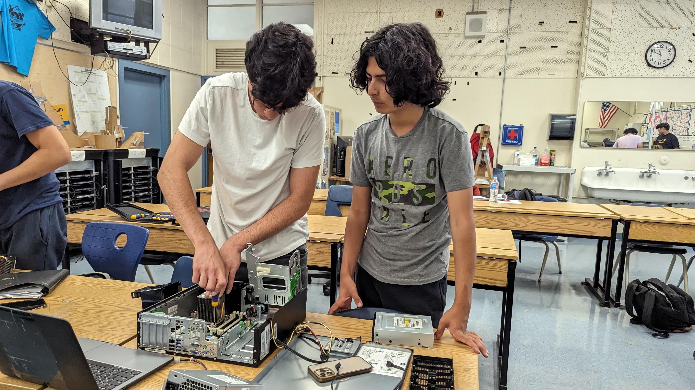
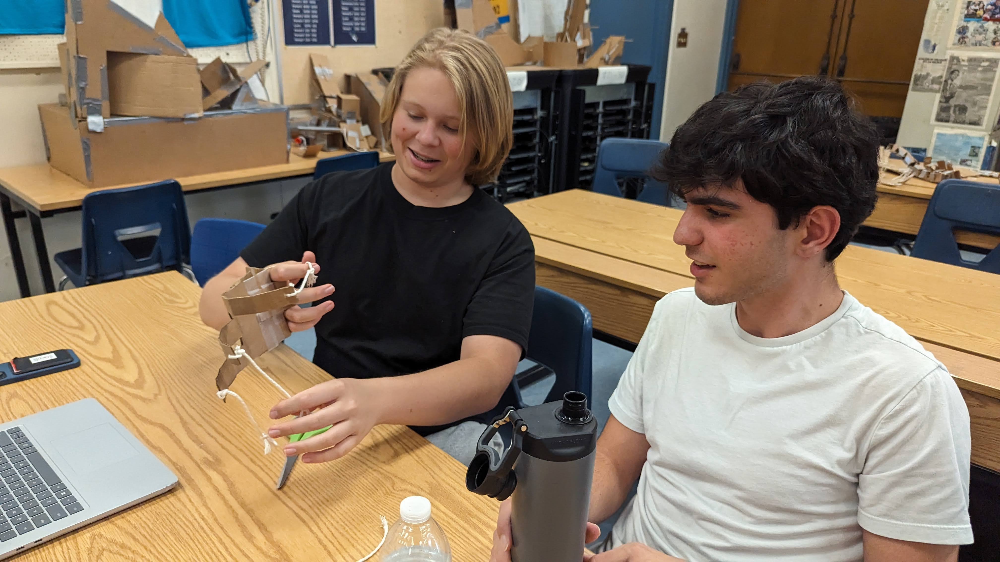
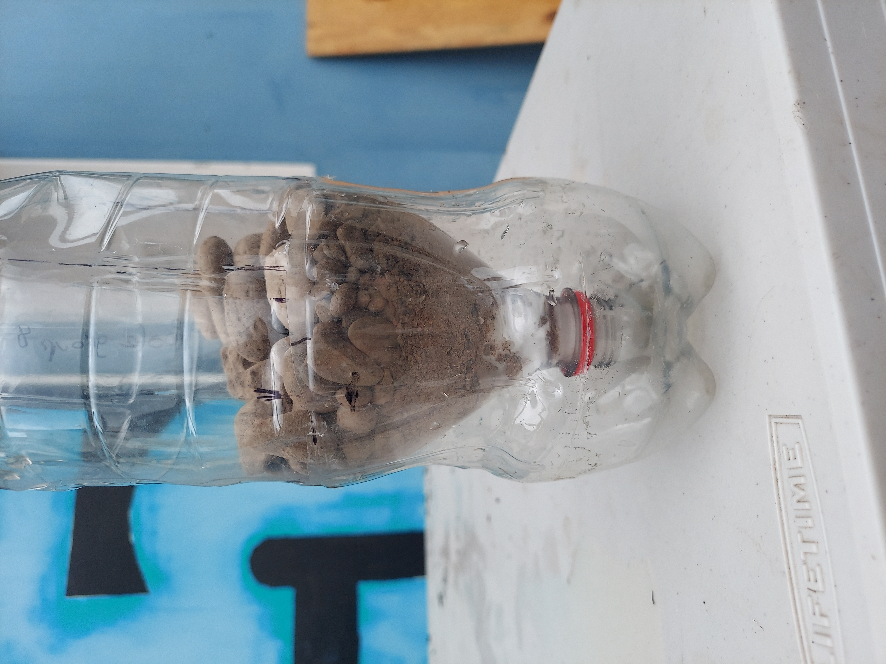

This week we went over 2 presentations. One of them was about Saftey in the classroom. The second one was about the engineering process. The engineering prcoess presentation taught me how engineering work/the steps of it.
Another thing we did was a challenge where we got a marble into a cup using pipes. The challenge was fun and actually challenging. It was difficult to coordinate ourselfs at first but got better as we went along and finally we got the marble in the cup.
This weekend will be fun, it was my birthday on the 24th and I'm gonna celebrate it on Saturday with my family.
My Favorite Food
This week we learned about mechanical engineering and the different parts of it. As groups we also started designing our own Rube Goldberg machines that we will later make. We didn't do much, we made a simple sketch and made a list of our materials.
For this weeks challenege, we use Tinkercad to design a home appliance. I made a toaster, I didn't finish it because I was trying to make complex shapes manually that they probally has presets of that I didn't bother to find.

My week went well, it was nice having Monday off and overall it was a easy week. This week we learned how to use Tinkercad more and we designed and started making our Rube Goldberg machines. My groups Rube Goldberg machine will will start with the baseball rolling down a few slides which then will land on a lever which will flip a cup, The cup will then push a car which will trigger a pully that drops a neddle on a ballon which will pop it. The most challenging part of our machine will probaly be getting the pully to work and actually pop the balloon. It just seems like the most complex part of our machine.
This week we just worked on and mostly finished our Rube Goldberg machines. I'm not completely happy with how it turn out because its not consistant. It's difficult to get the balloon to pop everytime because we are just hoping that our car goes where its suppose to. Other then that I'm happy with how it works, maybe next time I'll make it looks alittle more pretty since the tape looks kind of messy. My group worked pretty
well together, we all contributed to the project and my contribution was mostly building it.


This week was fun, we did alot. We had 2 challenges this week, the first was the paper boat. The boat was fun my boat worked well but it didn't carry that much weight, I didn't expect paper to be as strong on water as it was. The second challenge was trying to make another persons "E" by using their measurements, I did pretty well. The last thing we did was a presentation about computer engineering, it was a really interesting presentation and I enjoyed learning about it.
This week we learned about computer engineering. I though it was really interesting how the different parts the computer work together. This week we also disected a computer and put it back together, we identified all the parts on a worksheet after.
This weekend I'm going to the galleria with my friends and planning to buy some new clothes.

This week we learned about bioengineering. Bioengineering has many parts to it and it incorporates many different types of engineering. Part of bioengineering is biomimicry and for a challenge, we tried to create a hand to pick up a water bottle. My hand had 3 fingers and had string that pulled the fingers controlled by my fingers. It worked well but if I were to do it again I would make it function more like a real hand.
I would have the strings running down the fingers similar to humen tendons. This weekend I'm planning to go to Oktoberfest in Montrose with my friends. I'm not going to go to home coming this year.

This week we learned about aerospace engineering. We learned the history and different branches of aerospace engineering. We also learned about airplanes and how they work, airplanes have 4 forces acting on them; weight, thrust, lift, and drag. My favorite part of this class are the challenges, they're all unqiue and fun.
My BOM for bottle rocket
I felt like adding a game :)
This week we learned about aerospace engineeing. We leanred about how planes and rockets work like how the 4 forces acting on a plane are weight, thrust, lift, and drag. I thought it was really interesting because rockets and planes are cool. When designing my rocket, we tried designing it after a plane. We gave it 2 wings and a small top wing, idk what theyre called. The result was dissapointing, it didn't go very far.
Maybe if we were able to experiment with different pressures and different amounts of water, we could have made it work.
This week we learned about environmental engineering. It wasn't the most interesting but we learned what environmental engineeing is about and what engineers do. It was insteresting learning about how water is treated and all the different steps of it. It was also interesting to see how big companies carbon blueprints are.
We then created a water filter using rocks, dirt, and cotton balls. The filter was able to get out all the dirt from the water but the water became yellow. After, we filtered it a few more times the yellowness went away alittle. I'm excited for this weekend because my family and I are going to Palm Springs so I'll be able to relax alitte there.


Last week we learned about electrical engineering and how to build basic electrical circuits on Tinkercad and physical ones. Actually learning about electrical engineering was kind of boring but making the circuits was fun and challenging to figure out at first. The physical circuits were even more fun since it was hands fun
and actually seeing the lights turn on and off was rewarding.